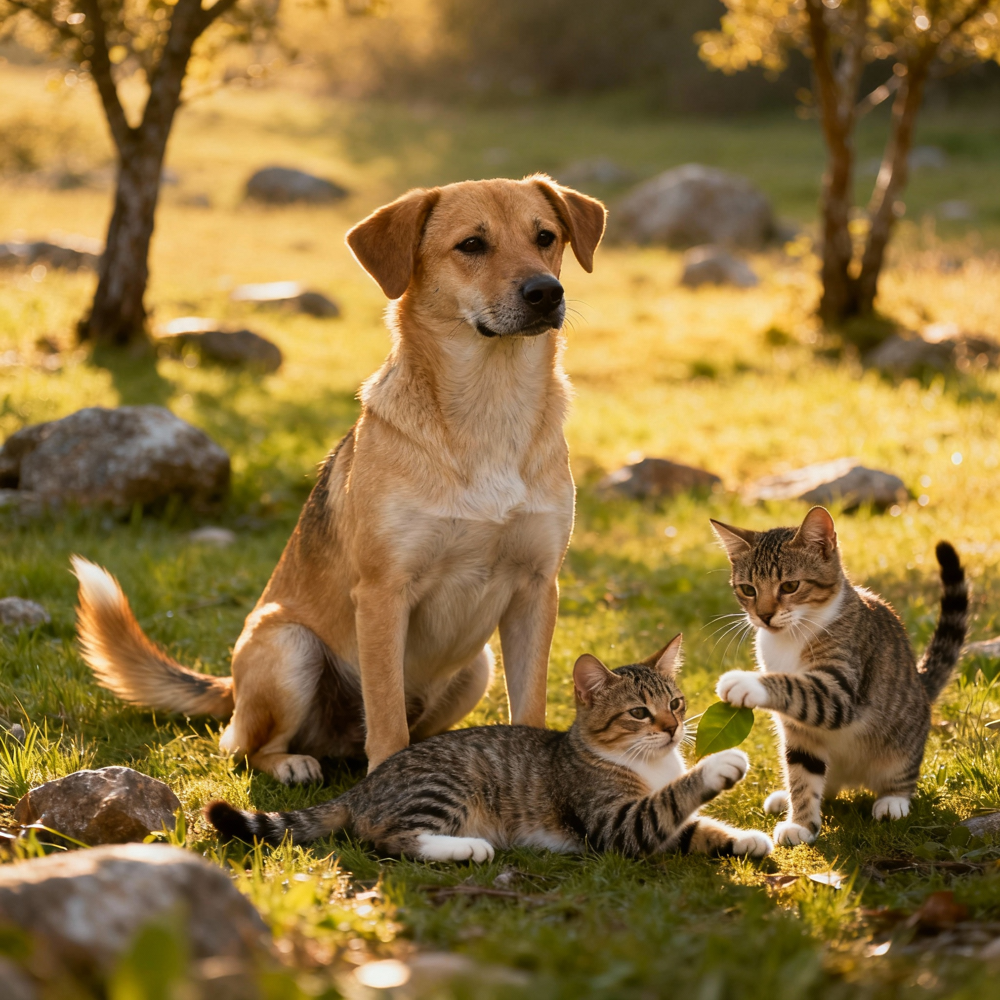

Nossa Inspiração e Missão
A ONG Melhor Amigo nasceu da vontade de divulgar e ajudar animais abandonados, promovendo o bem-estar animal por meio de parcerias e projetos voluntários, sem possuir abrigo físico. Ela busca conscientizar sobre a posse responsável e a castração, atuando em conjunto com órgãos municipais e protetores para melhorar a vida dos animais.
- Resgate e Reabilitação de Animais em Risco.
- doção Responsável.
- Educação Comunitária e Conscientização.
Transparência e Dados Institucionais
Acreditamos que a confiança é construída com clareza. Consulte abaixo os dados oficiais da nossa ONG:
| Item | Detalhe Oficial |
|---|---|
| CNPJ | 11.222.333/0001-55 |
| Sede (Endereço) | Rua Soraia, Nº 123 - Jacira - São Paulo/SP |
| E-mail Institucional | contato@melhoramigo.org.br |